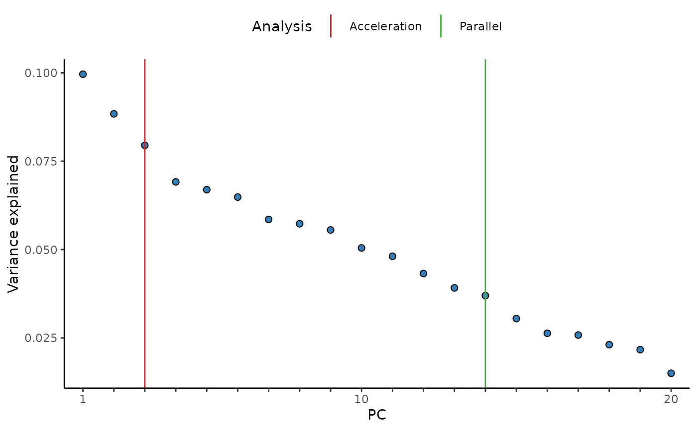

PCA outliers
pc_and_outliers.Rmdpc_and_outliers() performs principal component analysis.
Missing data is imputed to the median and used to identify the number of
informative or ‘significant’ PCs by (1) an acceleration analysis, and
(2) a parallel analysis. Finally the number of sample outliers are
determined at 3, 4, and 5 standard deviations from the mean on the top
PCs as determined by the acceleration factor analysis.
Create Metaboprep object
library(metaboprep)
# import data
data <- read.csv(system.file("extdata", "dummy_data.csv", package = "metaboprep"), header=T, row.names = 1) |> as.matrix()
samples <- read.csv(system.file("extdata", "dummy_samples.csv", package = "metaboprep"), header=T, row.names = 1)
features <- read.csv(system.file("extdata", "dummy_features.csv", package = "metaboprep"), header=T, row.names = 1)
# create object
m <- Metaboprep(data = data, samples = samples, features = features)
# print
m
#> <metaboprep::Metaboprep>
#> @ data : num [1:100, 1:20, 1] 0.755887 0.662386 0.444527 0.627146 0.000465 ...
#> .. - attr(*, "dimnames")=List of 3
#> .. ..$ : chr [1:100] "id_100" "id_99" "id_98" "id_97" ...
#> .. ..$ : chr [1:20] "metab_id_1" "metab_id_2" "metab_id_3" "metab_id_4" ...
#> .. ..$ : chr "input"
#> @ samples :'data.frame': 100 obs. of 5 variables:
#> .. $ sample_id: chr "id_100" "id_99" "id_98" "id_97" ...
#> .. $ age : int 29 47 65 57 52 40 42 63 49 42 ...
#> .. $ sex : chr "male" "male" "female" "female" ...
#> .. $ pos : chr "batch2" "batch1" "batch2" "batch1" ...
#> .. $ neg : chr "batch2" "batch2" "batch2" "batch1" ...
#> @ features :'data.frame': 20 obs. of 5 variables:
#> .. $ feature_id : chr "metab_id_1" "metab_id_2" "metab_id_3" "metab_id_4" ...
#> .. $ platform : chr "neg" "neg" "neg" "pos" ...
#> .. $ pathway : logi NA NA NA NA NA NA ...
#> .. $ derived_feature : logi TRUE FALSE FALSE FALSE FALSE FALSE ...
#> .. $ xenobiotic_feature: logi FALSE FALSE FALSE FALSE FALSE FALSE ...
#> @ exclusions :List of 2
#> .. $ samples :List of 5
#> .. ..$ user_excluded : chr(0)
#> .. ..$ extreme_sample_missingness : chr(0)
#> .. ..$ user_defined_sample_missingness : chr(0)
#> .. ..$ user_defined_sample_totalpeakarea: chr(0)
#> .. ..$ user_defined_sample_pca_outlier : chr(0)
#> .. $ features:List of 3
#> .. ..$ user_excluded : chr(0)
#> .. ..$ extreme_feature_missingness : chr(0)
#> .. ..$ user_defined_feature_missingness: chr(0)
#> @ feature_summary: num[0 , 0 , 0 ]
#> @ sample_summary : num[0 , 0 , 0 ]Run PCA analysis
pc_analysis <- pc_and_outliers(metaboprep = m,
source_layer = "input")| sample_id | pc1 | pc2 | pc3 | pc4 | pc5 | pc6 | pc7 | pc8 | pc9 | pc10 | pc1_3_sd_outlier | pc2_3_sd_outlier | pc3_3_sd_outlier | pc1_4_sd_outlier | pc2_4_sd_outlier | pc3_4_sd_outlier | pc1_5_sd_outlier | pc2_5_sd_outlier | pc3_5_sd_outlier |
|---|---|---|---|---|---|---|---|---|---|---|---|---|---|---|---|---|---|---|---|
| id_100 | 1.087 | 0.321 | 0.003 | 0.477 | 0.837 | 0.256 | -0.162 | -0.276 | 0.577 | -1.466 | 0 | 0 | 0 | 0 | 0 | 0 | 0 | 0 | 0 |
| id_99 | 0.418 | 0.573 | 1.581 | 0.110 | -1.154 | -0.256 | -0.103 | 0.115 | 1.961 | -1.201 | 0 | 0 | 0 | 0 | 0 | 0 | 0 | 0 | 0 |
| id_98 | -2.249 | 0.131 | 0.040 | -0.605 | -0.720 | 0.763 | -0.614 | 0.076 | -0.521 | -1.457 | 0 | 0 | 0 | 0 | 0 | 0 | 0 | 0 | 0 |
| id_97 | -0.619 | 0.749 | 0.544 | 1.956 | -1.659 | -0.174 | -0.669 | -2.172 | -0.463 | 1.769 | 0 | 0 | 0 | 0 | 0 | 0 | 0 | 0 | 0 |
| id_96 | 2.231 | -0.181 | -0.938 | 0.038 | -0.776 | 2.453 | 1.494 | 1.072 | 0.236 | 0.349 | 0 | 0 | 0 | 0 | 0 | 0 | 0 | 0 | 0 |
| id_95 | -2.266 | -0.147 | -0.042 | -0.775 | -0.625 | -0.426 | -0.755 | 1.979 | 0.624 | -0.591 | 0 | 0 | 0 | 0 | 0 | 0 | 0 | 0 | 0 |
| id_94 | 2.495 | 0.351 | 0.568 | 1.273 | 1.215 | 0.748 | 0.420 | 0.591 | -0.047 | 1.117 | 0 | 0 | 0 | 0 | 0 | 0 | 0 | 0 | 0 |
| id_93 | 0.941 | -0.274 | 1.458 | -1.740 | 0.901 | -0.859 | -0.361 | 0.689 | -2.045 | 1.248 | 0 | 0 | 0 | 0 | 0 | 0 | 0 | 0 | 0 |
| id_92 | -1.384 | -0.458 | 1.154 | 1.678 | -0.977 | -1.009 | -0.017 | 0.656 | 1.952 | 0.756 | 0 | 0 | 0 | 0 | 0 | 0 | 0 | 0 | 0 |
| id_91 | -1.717 | 2.883 | 0.230 | 0.741 | -0.961 | 1.664 | 1.846 | -0.801 | -0.530 | 0.544 | 0 | 0 | 0 | 0 | 0 | 0 | 0 | 0 | 0 |
Additional attributes
In addition, the variance explained vector is appended to the
returned data.frame as and attribute. This can
be accessed with the attribute name: [source_layer]_varexp,
in this case we used the input data, therefore the
attribute name is input_varexp. In a similar way, the
results of the acceleration analysis (input_num_pcs_scree)
and a parallel analysis (input_num_pcs_parallel) can also
be extracted.
library(ggplot2)
# extract varexp from attributes
varexp <- attr(pc_analysis, 'input_varexp')
# subset to top 100 for nicer plotting
if (length(varexp) > 100) varexp <- varexp[1:100]
# get acceleration and parallel analysis results
af <- attr(pc_analysis, 'input_num_pcs_scree')
np <- attr(pc_analysis, 'input_num_pcs_parallel')
if (af==np) np <- np+0.1 # make line visible if equal
# as data.frame
x_labs <- sub("(?i)pc","", names(varexp))
ve <- data.frame("pc" = factor(x_labs, levels=x_labs),
"var_exp" = varexp)
lines <- data.frame("Analysis" = c("Acceleration", "Parallel"),
"pc" = c(af, np))
# plot
ggplot(ve, aes(x = pc, y = var_exp)) +
geom_line(color = "grey") +
geom_point(shape = 21, fill = "#377EB8", size = 2) +
geom_vline(data = lines, aes(xintercept = pc, color = Analysis), inherit.aes = FALSE) +
scale_color_manual(values = c("Acceleration"="#E41A1C", "Parallel"="#4DAF4A")) +
scale_x_discrete(labels = function(x) ifelse(seq_along(x) %% 10 == 0 | x==1, x, "")) +
labs(x = "PC", y = "Variance explained") +
theme_classic() +
theme(legend.position = "top")